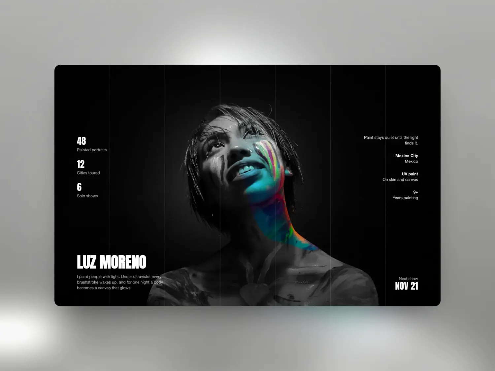
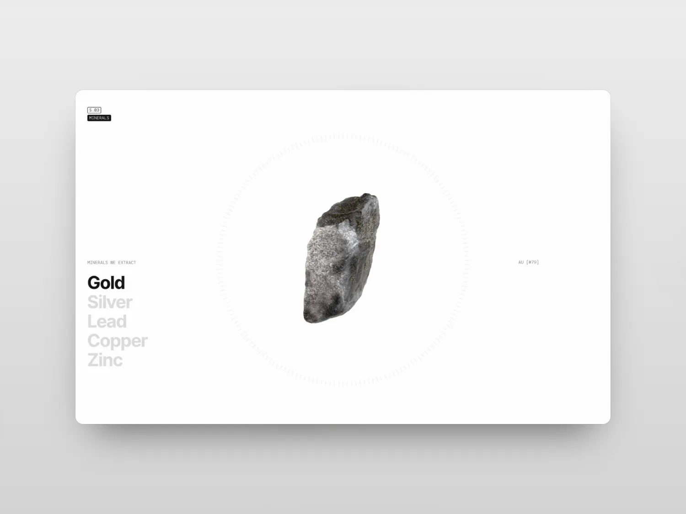
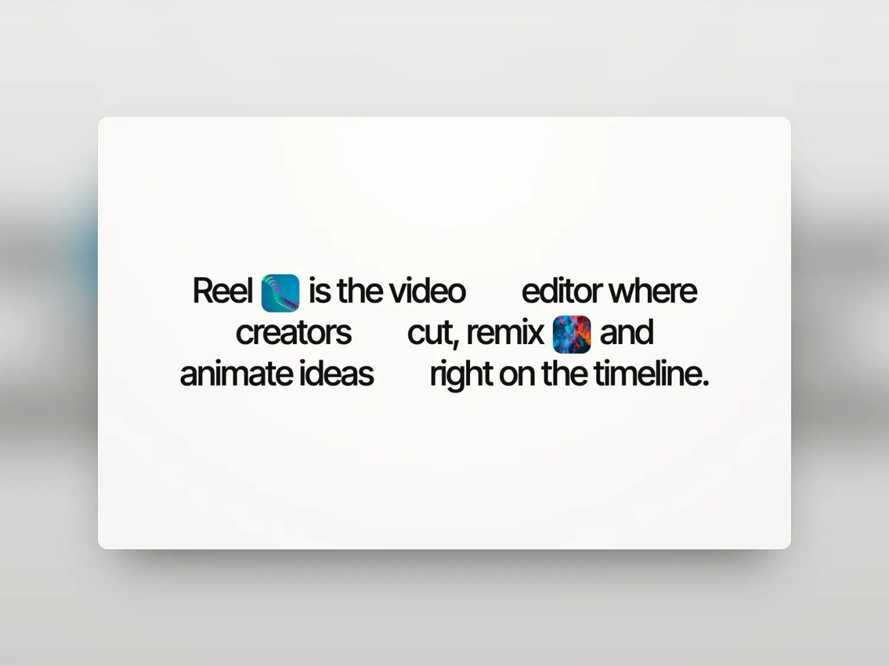
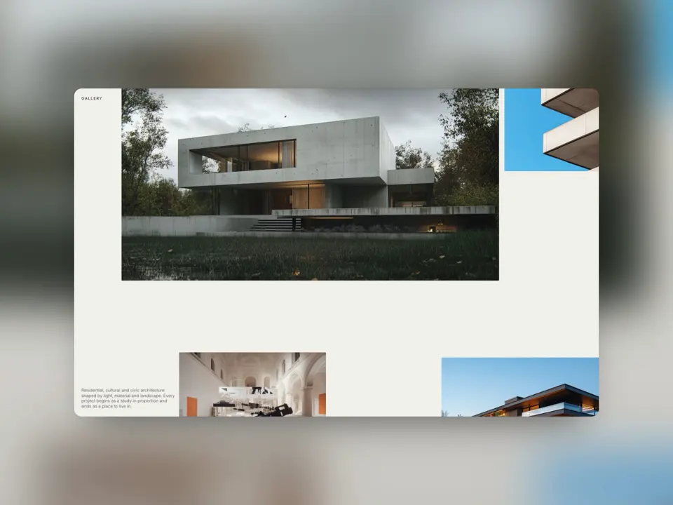
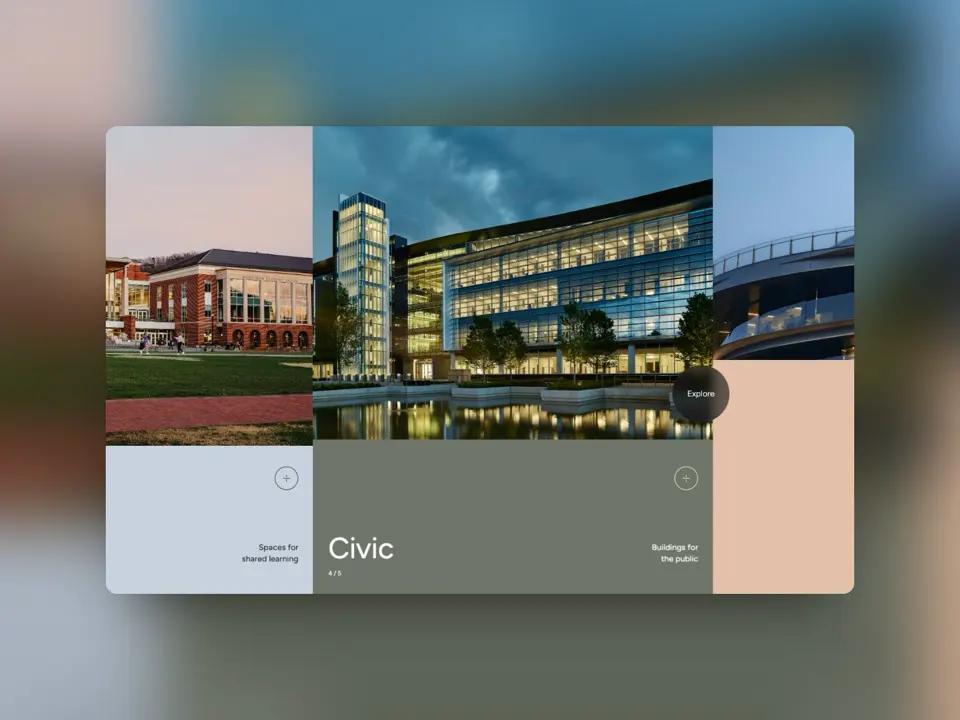
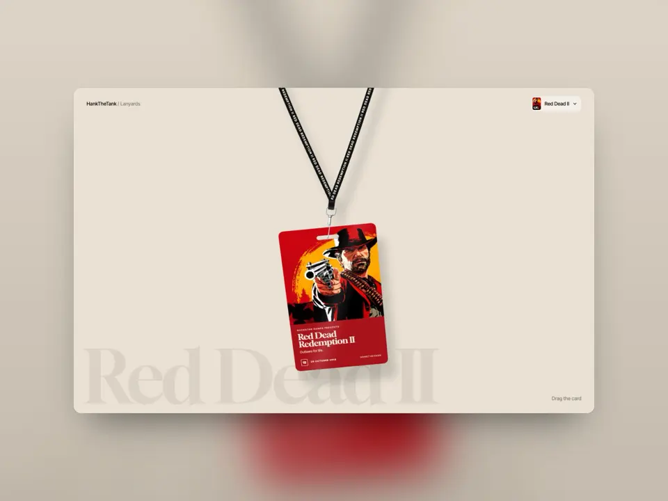
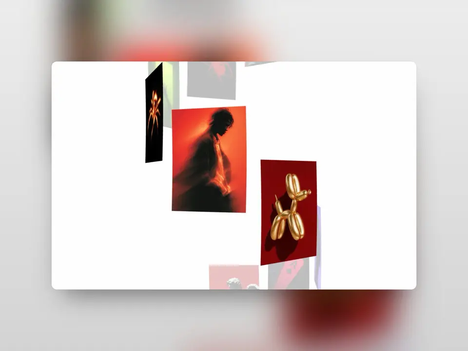
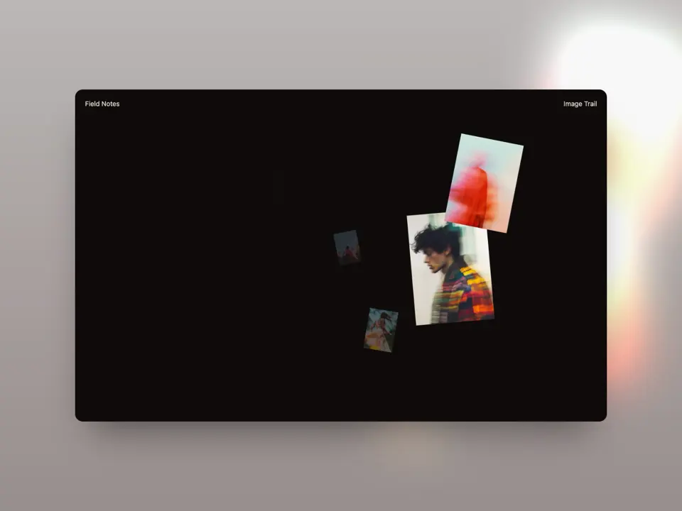
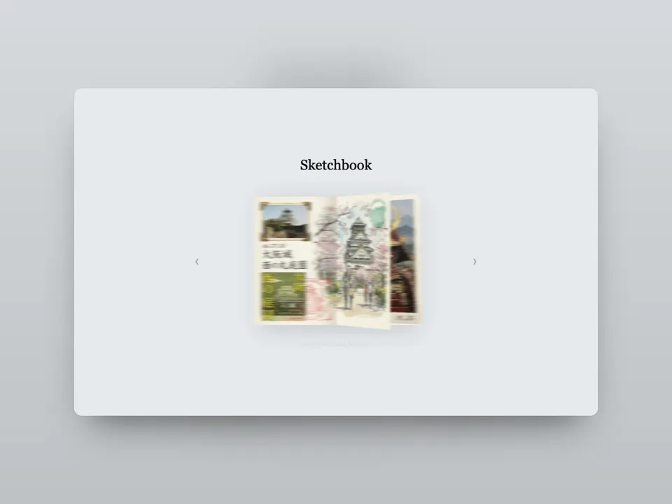
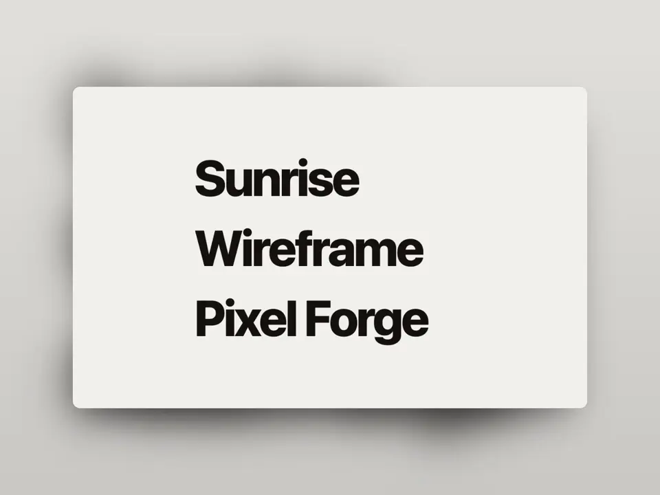

01
Zoom transition
Click a card and its video zooms into a whole new page, with real HTML files and one line of CSS.
Creative developer
Guwahati, India
About
Every Sunday I pick a website that won an award, rebuild its best idea from scratch, and publish the code with a video that explains every line.
Four recent rebuilds. Each one is a live demo, a repo and a video.
01
Click a card and its video zooms into a whole new page, with real HTML files and one line of CSS.

02
A black and white photo paints back to colour wherever your cursor goes, with two small WebGL shaders.

03
A scroll-driven dial of minerals, an image sequence drawn on a canvas.

04
Images jump out of the sentence and land on a timeline as you scroll.
More builds from the last year. Keep scrolling, it goes sideways.

Draggable galleryGSAP
Cards that openCSS Grid
Game lanyardsPhysics
Jelly spiral scrollThree.js
Image mouse trailGSAP
Flip book3D CSS
Pixel hoverCanvas All builds ↗Process
I look for one idea on an award-winning site that makes people ask how it was done.
I write it again from an empty file, as simply as it can be written, until it feels the same.
The code goes on GitHub, the demo goes on DiMaac, and a video walks through every line.